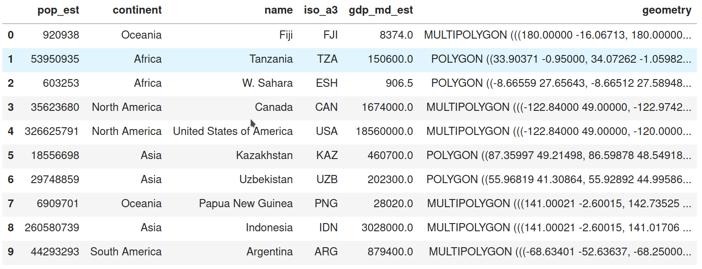

Geographic thinking for data scientists¶
Data scientists have long worked with geographical data. Maps, particularly, are a favorite kind of “infographic” now that we are in the age of responsive web cartography. While we discuss a bit about computational cartography in the chapter on choropleth mapping, it’s useful to think a bit more deeply about how geography works in the context of data science. So, this chapter delves a bit into “geographic thinking,” which represents the collected knowledge geographers have about why geographical information deserves special care and attention, especially when using geographic data in computations.
Introduction to geographic thinking¶
Geographical data has two very useful traits. First, geographic data is ubiquitous. Everything has a location in space-time, and this location can be used directly to make better predictions or inferences. But, akin to how “time” is more than a clock position, geography is more than an Earth position: location allows you to understand the relations between observations. It is often the relations that are useful in data science because they let us contextualize our data, building links within our existing data and beyond to other relevant data. As argued by the geographer Waldo Tobler, near things are likely to be more related than distant things, both in space and in time. Therefore, if we learn from this contextual information appropriately, we may be able to build better models.
Speaking of models, it is important to discuss how “location” and “relation” are represented. As the classic saying about statistical models,
All models are wrong, but some are useful [Box76]
In this, the author (statistician George Box) suggests that models are simplified representations of reality. Despite the fact that these representations are not exactly correct in some sense, they are useful in understanding what is important about a statistical process. Reality is so complex that we simply can not capture all of the interactions and feedback loops that exist in our model. And, indeed, even if we could, the model would not be useful, since it would be so complex that it would be unlikely that any individual could understand it in totality or that a computer could estimate it. Thus, simplification is necessary.
In a similar fashion, we paraphrase geographer Keith Ord in suggesting:
All maps are wrong, but some are useful [Ord10] (p. 167)
Like a statistical model, a map is a representation of the underlying geographical process, but is not the process itself. Despite the fact that these representations are not exactly correct in some sense, they are useful in understanding what is important about a geographical process. In this text, we will use the term “data model” to refer to how we conceptually represent a geographical process. We’ll use “data structure” in later sections to refer to how geographic data is represented in a computer. Below, we discuss a few common geographic data models and then present their links to typical geographic data structures.
Conceptual Representations: Models¶
It is often challenging to develop a useful conceptual representation for geographic things. For example, maps of population density generally require that we count the number of people that live within some specified “enumeration area,” and then we divide by the total area. This represents the density of the area as a constant value over the entire enumeration unit. But, in fact, people are discrete: we each exist only at one specific point in space and time. So, at a sufficiently fine-grained scale of measurement (in both time and space), the population density is zero in most places and times! And, in a typical person’s day, they may move from work to home, possibly moving through a few points in space-time in the process. For instance, most shopping malls have few (if any) residents, but their population density is very high at specific points in time, and they draws this population from elsewhere.
This example of population density helps illustrate the classic data models in geographic information science. Geographic processes are represented using objects, fields, and networks.
Objects are discrete entities that occupy a specific position in space and time.
Fields are continuous surfaces that could, in theory, be measured at any location in space and time.
Networks reflect a set of connections between objects or between positions in a field.
In our population density example, an “enumeration unit” is an object, as is a person. The field representation would conceptualize density as a smooth, continuous surface containing the total number of persons at all locations. The network representation would model the inter-related system of places whose densities arise from people moving around.^[A useful reference on the topic of common models in geographic information science is [Goodchild_2007], who focus establishing a very general framework with which geographic processes can be described, and which inspires our present framework.]
The differences between these three representations are important to understand because they affect what kinds of relations are appropriate. For instance, the relationships among geographical processes with objects can be modelled using simple distances. Near objects might then be “strongly related,” and distant objects “weakly related.” Alternatively, we could consider (or construct) a network that relates the objects based on their interactions. Geographical processes with networks must account for this topology, or structure of the connections between the “nodes” (i.e. the origins or destinations). We cannot assume that every node is connected, and these connections also cannot be directly determined from the nodes alone. For example, two subway stations may be very far apart, but could be connected by a frequent direct express train; given their connectivity, the raw distances (treating stops as geographic objects) may not be a good indication of their true geographic relationship. Finally, in a field, measurements can occur anywhere, so models need to account for the hypothetical realizations that could happen in the unobserved space between points of measurement.
These kinds of structures, in turn, arise directly from how processes are conceptualized and what questions the analyst seeks to answer. And, since the measurement of a process is often beyond the analyst’s control, it is useful to recognize that how a geographical process actually operates (that is, its “causal” or “generative” structure) can be different from how we are actually able to measure it. In the subsequent sections, we discuss the common frames of measurement you may encounter, and the traditional linkages between data model and data structure that are found in classical geographic information systems.
Computational representations: Data Structures¶
Above, we have discussed how data models are abstractions of reality that allow us to focus on the aspects of a process that we are interested in and measure them in a way that helps us answer the questions we care about. In this context, models are one piece of a broader process of simplification and operationalization that turns reality into representations suitable for computers and statistics. This is necessary for us to tap into computers’ analytical capabilities. Data models clarify our thinking about which parts of the real world are relevant and which we can discard. Sometimes, they even guide how we record or measure those aspects.
However, most of data and geographical science is empirical, in that it consists of the analysis and interpretation of measurements. To get to analysis, we require one further step of operationalization and simplification. The object, network, and field data models discussed in the previous section are usually still too abstract to help us in this context. So, we pair these data models with other constructs that tell us how quantities can be stored in computers and made amenable for analysis. This is the role that “data structures” play.
Data structures are digital representations that connect data models to computer implementations. They form the middle layer that connects conceptual models to technology. At best, they represent the data model’s principles as well as is technologically possible. In doing so, data structures enable data models to guide the computation. At worst, a bad match between data structure and model can make it challenging to design or execute analyses and make it necessary to transfer to a different data structure.
While we generally think of the fidelity a data structure has for a given data model, this relationship can also run in the opposite direction: once established, a technology or data structure can exert an important influence about how we see and model the world. This is not necessarily a bad thing. Embedding complex ideas in software helps widen the reach of a discipline. For example, desktop GIS software in the 90’s and 2000’s made geographic information useful to a much wider audience. It made it so that geographic data users did not necessarily require specific training to work with geographic data or conduct spatial analysis. It did this largely by standardizing the data structure central to geographic analysis, the “geographic matrix” [Ber64] which we now call a “geotable.” This made it easy to represent most geographical processes in a format that people could easily understand.
However, making conceptual decisions based on technological implementations can be limiting. In the 1990s, Mark Gahegan proposed the concept of “disabling technology” to express how the technological systems we use may affect the structure of our thinking [Gah99]. As a metaphor, we can think of technology as a pair of eyeglasses and data models as the “instructions” to build lenses: if all we use to look at the world is the one pair we already have, we miss all the other ways of looking at the world that arise if we built lenses differently. Of course, one may believe they can operate without lenses at all, but even healthy eyes with perfect vision contain optical imperfections in their lenses!
So, “what main geographic data structures should the data scientist care about?”, we hear you ask. Of course, as with everything in technological, this evolves. In fact, as we will see below in this chapter, much is changing rapidly, redefining how we translate conceptual models into computational constructs to hold data. However, there are a few standard data structures that have been around for a long time because they are so useful. In particular, we will cover three of them: geographic tables, surfaces (and cubes), and spatial graphs. We have selected these because each serves as a technological mirror for the concepts discussed in the previous section.
Geographic tables store information about discrete objects. Tables are two dimensional structures made up of rows and columns. Each row represents an independent object, while each column stores an attribute of those objects. Geographic tables are like typical data tables where one column stores geographic information. The tabular structure fits well with the object model because it clearly partitions space into discrete entities, and assigns a geometry to each entity according to their spatial nature. More importantly, geographic tables can seamlessly combine geographic and non-geographic information. In this data structure, geography becomes simply “one more attribute”, when it comes to storage and computer representation.
This is powerful because there is wide support in the world of databases for tabular formats. Geographic tables integrate spatial data into this typically non-spatial domain and allow it to leverage much of its power. Technically speaking, geographic tables are widely supported in a variety of platforms. Popular examples include: PostGIS tables (as a geographic extension of the PostgreSQL database), R’s sf data frames or, more relevant for this book, Python’s GeoDataFrame objects, provided by geopandas (shown in the figure below). Although each of them has their own particularities, they all represent implementations of an object model.

Surface data structures are used to record empirical measurements for field data models. For a field (in theory), there is an infinite set of locations for which a field may be measured. In practice, fields are measured at a finite set of locations. This aim to represent continuity in space (and potentially time) is important because it feeds directly into how surface data are structured. In practice, surfaces are recorded and stored in uniform grids, or arrays whose dimension is closely linked to the geographic extent of the area they represent. In geography, we generally deal with arrays with two or more dimensions. Unlike geographic tables, the arrays used in a surface data structure use both rows and columns to signify location, and use cell values to store information about that location. For example, a surface for air pollution will be represented as an array where each row will be linked to the measured pollutant level across a specific latitude, and each column for a specific longitude. If we want to represent more than one phenomenon (e.g. air pollution and elevation), or the same phenomenon at different points in, time we will need different arrays, possibly connected. These multi-dimensional arrays are sometimes called data cubes or volumes. An emerging standard in Python to represent surfaces and cubes is that provided by the xarray library, shown in the figure below.

Spatial graphs capture relationships between objects that are mediated through space. In a sense, they can be considered geographic networks, a data structure to store topologies. There are several ways to define spatial relationships between features, and we explore many of them in Chapter 4. The important thing to note for now is that, whichever rules we follow, spatial graphs provide a way to encode them into a data structure that can support analytics. As we will see throughout the book, the range of techniques that rely on these topologies is pretty large, spanning from exploratory statistics of spatial autocorrelation (Ch. 6 & 7), to regionalization (Ch. 10) to spatial econometrics (Ch. 11). Ironically, each of these fields, and others in computer science and mathematics, have come up with their own terminology to describe similar structures. Hence, when we talk or read about spatial weights matrices, adjacency matrices, geo-graphs, or spatial networks, we are thinking of very similar fundamental structures deployed in different contexts.
Spatial graphs record information about how a given observation is spatially connected to others in the dataset. For this reason, they are an obvious complement to geographic tables, which store information about individual observations in isolation. Spatial graphs can also be derived from surfaces but here the situation is slightly different because, although surfaces record discrete measurements, they usually relate to a continuous phenomenon. In theory, one could take these measurements at any point in space, so spatial graph of a surface should have an infinite number of observations. In practice however spatial graphs are now sometimes used with grids because, as we will discuss in the following section, the connections and distinctions between data models and structures are changing very quickly. Since many fields have theoretical constructs that resemble spatial graphs, there exist several slightly different data structure that store them both in memory and on disk. In this book, we will focus on graph objects provided by the networkX library as well as the spatial weights objects in PySAL which rely to a great extent on sparse adjacency matrix data structures from scipy.

The term spatial graph is sometimes interchangeably used with that of spatial network. This is of course a matter of naming conventions and, to the extent it is only that, it is not very important. However, the confusion can sometimes reflect a more profound misconception of what is being represented. Take the example of the streets in a city or, of the interconnected system of rivers in a catchment area. Both are usually referred to as networks (e.g. city network or river network) although in many cases what is being recorded is actually a collection of objects stored in a geographic table. To make the distinction clear, we need to think about what aspect of the street layout or the river system we want to record. If it is the exact shape, length and location of each segment or stream, this resembles much more a collection of independent lines or polygons that happen to “touch each other” at their ends. If what we are interested in is to understand how each segment or river is related to each other, who is connected to whom and how the individual connections comprise a broader interconnected system, then a spatial graph is a more helpful structure to use. This dichotomy of the object versus the graph is only one example of a larger point: the right link between a data model and data structure does not solely depend on the phenomenon we are trying to capture, but also our analygical goal.
Connecting the conceptual to the computational¶
Now that the distinction between the conceptual data model and computational data structure is clear, we should explore the ways in which these are traditionally aligned. In presenting this traditional relationship between data model and data structure, we also seek to highlight the recent developments where this traditional mapping is breaking down.
First, the main conceptual mapping of data model to data structure is inherited from advances made in computer graphics. This traditional view represents fields as rasters and objects as vector-based tables. In this mode of analysis, there is generally no space for networks as a first-class geographic data structure. They are instead computed on the fly from a given set of objects or fields.
The separation of raster/image from vector/table and general omission of networks both stem from implementation decisions made in the one of the first commercially-successful geographic information systems, the Environmental Research Software Institute (ESRI)’s ARC/INFO package. This was a command-line precursor to modern graphical information processing systems, such as the free and open source QGIS or the ESRI’s ArcGIS packages. This association between field-and-surface, object-and-table is sometimes called the “desktop view” of geographic information due to the dominance of these graphical GIS packages, although some argue that this is fundamental to geographic representation [GYC07] and cannot be transcended.
This categorization is now breaking up (data is data)¶
Current trends in geographic data science suggest that this may not necessarily be the case, though. Indeed, contemporary geographic data science is moving beyond these mappings in two very specific ways.
First, statistical learning methods are getting very good at efficiently translating data between different representations. If nothing else, the rise of machine learning has generated extremely efficient “black box” prediction algorithms across a wide class of problems. If you can handle the fact that these algorithms generally are not explainable in their internal operations, then these methods can generally provide significant improvements in prediction problems. Change of support problems, which arise when attempting to move data from one geographical data structure to another, are wholly focused on accuracy; the interpretation of a change of support algorithm is generally never of substantive interest. Therefore, machine learning has made it much easier to move between data structures, which reduces the importance of picking the “right” representation from the outset. The “cost” of moving between data structures have been lowered.
Second, this means that there are an increasingly large number of attempts to find a “fundamental” underlying scale or representation that can be used for interchange between geographic data structures. This has largely grown out of corporate data science environments, where transferring all geographic data to a single underlying representation has significant benefits for data storage, computation, and visualization. Projects such as Uber’s “Hierarchical Hexagonal Geospatial Index,” or “h3” for short, provide something like this, and many other internal proprietary systems (such as the S2 “Earth cube” by Google) serve the same purpose. In addition, projects like WorldPop [Tat17] are also shifting the traditional associations between “types” of data and the representations in which they are typically made available. Population data is generally presented in “object-based” representations, with the census enumeration units as “objects” and the population counts as features of that object. WorldPop (and others like it), though, have shifted to presenting population data in world-wide rasters at varying resolutions, conceptualizing population distribution as a continuous field over which population counts (both modeled and known) can be presented.
These are only two examples of the drive towards field-based representations in contemporary geographic data science, and will no doubt change as rapidly as the field itself. However, the incentives to create new representations will likely only intensify, as standard, shared architectures increasingly dominate the free and open source scientific software ecosystem. While scientific results stress the issues of a one-size-fits-all scale of analysis and indicate that results often do change when the geographical scale of analysis changes, this may not matter in most practical applications where explanation is less important than prediction.
Conclusion¶
This chapter has discussed the main conceptual data models for geographical process and their typical implementations in computational data structures. Objects, which are generally used to represent distinct “bounded” agents, are typically represented by “vector” data structures through a combination of points, lines, polygons. Fields, representations of the continuous smooth surfaces, are typically represented by “raster” data structures that look like images, with pixels recording values at each possible site and bands recording the kind of data recorded. Networks, which reflect relationships between objects, have typically been core to the data models of many geographical processes, but have not historically been represented easily in many of the data structures common in geographic information systems. This is changing, however, as networks become (or return to being [UvanMeeteren21]) more central to our computational and conceptual understanding of geographical systems.
By recognizing that the conceptual data model can be distinct from the computational data structure, we can move more easily between different data structures. Further, recent developments in computation and data storage are breaking down the traditional connections between data models and data structures. These have involved focusing much more intently on change of support problems that arise when converting between geographic data structures and attempts at finding a single “canonical” geographic data structure. Despite these trends, the main choice about the data model can be made independently of the data structure, so it is important to be very clear about the “entities” involved in your problem and how they are related. Be attentive to what the entities you’re interested in analyzing or predicting are, and be aware of when that may be at odds with how they are measured. While it is increasingly common to use hexagonal or square grids to represent data, be attentive to how this obscures the actual process you seek to measure or behavior you aim to model. Be prepared to answer: yes, we can grid this, but should we? The answer will depend on your goal.
Overall, this chapter provides a grounding for the concepts and language used in the rest of the book to describe geographic processes, the datasets that describe them, and the models that analyze them. In some subsequent chapters, we will integrate information from many different data structures to study some processes; in other chapters, this will not be necessary. Recognizing these conceptual differences will be important throughout the book.